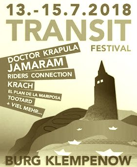

Transit Festival

Ein Gedankenaustausch - Musik umkreist den Globus, doch für die halbe Welt ist der Planet nicht rund. - Eintritt frei - Transit meint Durchlässigkeit und Austausch. Für Offene Wege auf einer Welt, für Freiheit und Nahrung. Der Boden ist für Alle. In einem kantigen Europa braucht es Übergänge jenseits von Nationen. Wir wagen den Blick ins Morgen - Wann wenn nicht jetzt? Zu Gast sind: Sea-Watch mit Frank Dörner (Koordinator Ostägäis) und Peter Heibing (auch Maschinist für Seaeye, Mission Lifeline), Afrique Europe Interact, Informationen zur Kooperative Faso Kele/Guinea und der Schriftsteller Rodrigue Péguy Takou Ndie. Angefragt: Pro Bleiberecht MV, Woman in Exile.
Mit viel Freude, Helfern und neuen Ideen gestalten wir das 6. Transit Festival unseres gemeinnützigen Kultur-Transit-96 e.V.. Das Festival erfreut mit Musikern aus aller Welt und von Nebenan, Menschen und Ohren jeden Alters. Transit: Ein Ferienlager auf Burg Klempenow. Mehr als ein Dutzend internationaler Bands von Südamerika über New York, Greifswald nach Nahost, Theater, DJs, Gespräch: Transit für Alle, Lagerfeuer, Baden im Fluss, Barfuss auf der Bühne. Familiär und fantastisch. LIVE: Jamaram, TootArd, Doctor Krapula, El Plan de la Mariposa, Karikatura, The Lips, Krach, Riders Connection, Kreuzberg Shanty Crew, Hot Staff Brass Band, Martha Friedberg, The Sunlit Earth +Djs: Fette Elke + Anne Regler und mehr Dazu: Theater mit Puppen, Duo Ambra Myrrha, Street Art, Demokratiebahnhof Anklam mit Siebdruck, Farbenklitsch, Workshops: Spinnen und Spielen, Wasserspielplatz, wunderbares Esen und Getränke, Zelte im Garten, das Tollensetal samt Burg und Kunst... http://transit-festival.de/